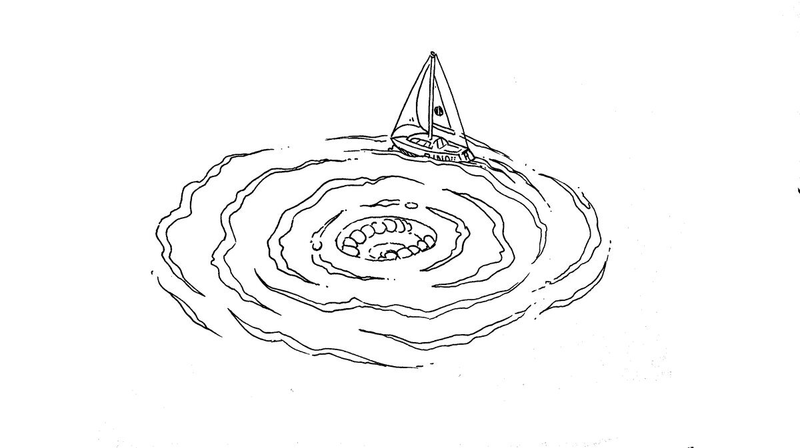
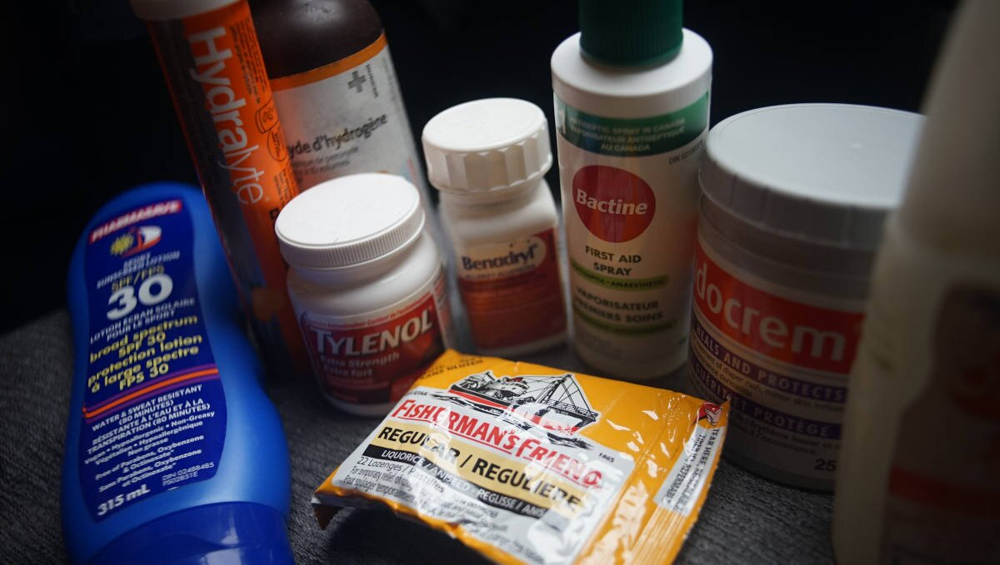

safety gear
They who let the sea lull them into a sense of security is in very grave danger.Hammond Ines
Things can happen, even on a calm ocean, so it is necessary to be alert and to not underestimate the water's strength and unpredictability. Never be complacent, and don't trust the sea.
Safety gear with auto-inflating systems need to be inspected often, and you must carry spares. Safety gear will last you many years if serviced regularly.
Pyrotechnic signaling devices (including aerial flares and hand held signals) expire 42 months after the date of manufacture in accordance with the Coast Guard requirements. Typically, this means that you must replace your flares every three boating seasons. Aerial flares cost $75 per pack of 6 (in Canada), for a boat our size (10 m) we need to have 12 aboard.
Life jackets. Wear a life jacket (with a sailing harness) and tether (especially when night sailing). The jackets need to be serviced every 3 years, so that the auto-inflating canisters can be tested, and replaced. Replacement cartridges for auto-inflating PFDs cost about $35 CAD. If planning to travel for many years out of the country, carry replacement cartridges onboard, because other countries may not carry the ones required by your model and that replacements can't be shipped by air since they're pressurized.
Life jackets that are not auto-inflating are fine, but must have a sailing harness to which you can clip a short tether. If the tether is short enough, you won't fall overboard and won't require extra flotation. Floating life jackets that are non-inflating are bulky, and may make it difficult, or uncomfortable to sail in. Wearing a short tether that keeps you to the boat, and prevents you from falling too far overboard is your best security. We recommend a short tether with two clips, so you can clip to another point on the boat while always being clipped on elsewhere.
life rafts. Re-packing a liferaft is very expensive, and varies depending on the model, and your location in the world.
Jacklines. Run jacklines along the deck, from the bow to stern cleats, and keep them within the standing rigging. Make sure the jacklines are flat, and brightly colorful so as to be visible at night. Rope jacklines can trip you up. An even better option for jacklines, is to keep them running as close to the center of the boat as possible, so that there is no chance of falling overboard when attached. Jacklines have to be made from a strong, UV resistant material, you can buy them, but we had ours made.
first aid kit
Basic First-aid kit:

Clearly mark the first-aid kit with a red cross, and make sure everyone aboards knows where it is. Keep a list inside of the items you use, and be sure to top off the kit every year or so. Also, see ditch bag.
Do not get all of the items below without doing thorough research yourself. You may not need all of these items. Do not blindly buy a pre-made kit, make a list of likely ailments and situations and get good quality medicine and first-aid kit items individually(sourced in-person from local pharmacies).
Make sure that you understand how to administer medicine, or to practice wound care, to a patient before attempting it. Take a first-aid course, read manuals, etc.
We'll say it again, when assembling a first-aid or a medicine kit, consult rigorously peer-reviewed scientific research, make a list, and get individual items suited for your unique needs and situation.
Check out our illustrated notes on building a first-aid kit on Rabbit Waves.
- Sterile gauze pads (dressings) in small and large squares to place over wounds(Must be secured with medical or surgical tape, or safety pins)
- Medical tape(To secure dressings, to hold medical devices on the body(catheter), to protect areas against chafe, etc.)
- Surgical tape(A stronger, very sticky, tape to close surgical incisions, to secure dressing, for makeshift bandages, etc, e.g, 3M Transpore)
- Roller and triangular bandages(To hold dressings in place or to make an arm sling)
- Adhesive bandages(Assorted sizes, e.g, Elastoplast, Opsite and Compeed)
- Medical scissors
- Tweezers(For removing ticks, to manipulate sutures, or for other delicate medical tasks)
- Safety pins(To tie off bandages, multiple other uses)
- Instant ice packs
- Disposable non-latex gloves(Nitrile. Such as surgical or examination gloves)
- Flashlight(With extra batteries in a separate bag)
- Burn care dressing(Water Jel, Burncare, Alocane, Second Skin, etc. To care for minor burns quickly)
- Antiseptic wipes or soap
- Pencil and pad
- Permanent marker(To write medical information on skin or other materials)
- Emergency blanket
- Eye patches
- Thermometer(Forehead strip, and/or full-sized thermometer)
- A good first-aid manual
Basic Medicine kit:
Always read about a medicine before using it. If administering medicine to another person, ask about their allergies, and past medical history, last oral intake etc. Some medicines can cause severe allergic reactions, or may interact with other medicine(e.g,: Ibuprofen is contraindicated for anyone with heart issues, regardless of their age).
Note: For very strong over-the-counter pain relief, combine variations of paracetamol, ibuprofen and codeine, paying attention **not to double dose** with paracetamol.
Never administer anything to anyone without their consent.
- Antifungal cream(Yeast infections, e.g. Canesten)
- Laxative(Oral. Constipation relief.
- Ibuprofen(Oral. Minor pain, fever reducer, e.g., toothache/menstrual cramps/headache)
- Aspirin(Oral. Pain, fever, inflammation reducer, e.g., treat/prevent heart attacks, strokes, chest pain)
- Antihistamines (allergy relief)
- Anti-nausea(Scopolamine patches, dimenhydrinate(dramamine), Meclizine, Promethazine, Ephedrine)
- Ear drops(Pain, inflammation, infection & earwax blockage. Different formulations for each ailment)
- Eye wash and solution
- Insect repellant(Must include picaridin[also known as icaridin], DEET, ethyl butylacetylaminopropionate [IR3535], or oil of lemon eucalyptus[containing p-menthane-3,8-diol, PMD]).
- Hand sanitizer(60-95% alcohol content)
To reduce germs on skin, aim ethyl alcohol or isopropyl alcohol. To protect against diarrheal illnesses, including rotavirus and norovirus, wash hands with soap and water instead.
- Hydrocortisone(Combat inflammation, severe itching. Used topically for allergic rashes, eczema, psoriasis, itching, and other inflammatory skin conditions, & to treat hemorrhoids[as a suppository])
- Calamine lotion (Insect bites, mild itchiness)
- Topical anesthetic
To reduce pain, or itchiness on the skin, eyes, the inside of the nose, ear or throat, the anus and the genital area(different formulations for each area). Topical anesthetics come in creams, ointments, aerosols, sprays, lotions, and jellies. Examples include benzocaine, pramocaine, butamben, dibucaine, lidocaine, oxybuprocaine, pramoxine, proxymetacaine (proparacaine), and tetracaine (also named amethocaine).
- Antibiotic(Oral. Bacterial infections, traveler's diarrhea, & gastrointestinal infections, e.g, amoxicillin, azithromycin, cephalexin, and ciprofloxacin.)
- Acetaminophen/Paracetamol.(Oral. Severe pain relief, fever reducer. Has the least side effects, e.g, padanol, tylenol)
- Topical antibiotic(Ointment & powder, e.g. Bacitracin/Polysporin/Neosporine. Topical ointment. Prevents infection. For minor scrapes, cuts, and burns. Powder is useful for bad burns that are too painful to touch, and to prevent infection in deep cuts)
- Sunscreen (SPF 30)
- Hydrogen peroxide 3% dilution(Wound disinfectant. Good for initial cleaning, not for prolonged use on the same area. Antiseptic, useful to sterilize tools & surfaces)
- Aloe vera gel with lidocaine (Burn relief)
- Antidiarrheal(Diarrhea, e.g., s loperamide(Imodium), diphenoxylate, bismuth subsalicylate(Pepto-Bismol), cholestyramine, and octreotide)
- Hydration tablets/powder or salt tablets(Post-sickness, or dehydration replenishment of minerals and salt, e.g, Dioralyte sachets, Phizz hydration tablets, saltstick dispenser)
- Anti-chafe cream(Protects skin against irritation due to chafing, moisture, ill-fitting clothing, physical activity, heat and humidity, etc. Look for products with combinations of cocos nucifera, glycerin or caprylic/capric triglyceride, aloe vera, zinc oxide, cornstarch, vitamin E, and kaolin clay)
- Antiseptic cream(Prevent infections caused by minor cuts, scrapes & burns, e.g, Savlon Cream)
- Distilled water(Clean water when cleaning wounds, or washing down medical equipment)
- Rubbing alcohol(Isopropyl and water. Antibacterial. Used to disinfect wounds(using a cotton pad), tools or surfaces. Will evaporate quickly, don't use on varnished wood.
- Zinc Oxide cream(For skin irritations, like chafing and sunburns. It helps in wound healing in preventing bacterial infections, to lock-in moisture, as sunscreen, etc.)
- Decongestant nasal spray
- Codeine
To treat mild to moderate pain. Possible to combine with paracetamol (as co-codamol: e.g., brands Paracod, Panadeine, and the Tylenol-with-codeine series, including Tylenol 3 and 1, 2, and 4), with aspirin (co-codaprin), or with ibuprofen (Nurofen Plus). These combinations provide greater pain relief than either agent alone.
Advanced kit add-ons:

- Hot water bottle (for hypothermia)
- Staple gun (for wounds)
- Epinephrine (vials, or Allerject/AUVI-Q. Avoid EpiPens, they are grifters)
- Tourniquet
- Hemostatic dressing with coagulant(To cover and stop severe bleeding, like head wounds, e.g. QuikClot)
- Emergency bandage(Also known as Israeli bandage. Possible to apply one-handed, to oneself. Designed to apply pressure to a wound, easy to secure in place)
- Scalpel with sterile blades(To remove splinters, boils, etc.)
- Multitool
- Irrigation syringe
- Compression bandage
- Reinforced sterile skin closures
- CPR pocket mask
- Povidone surgical scrubs(iodine) (Antiseptic. Used to reduce bacteria on the skin prior to surgery or patient care, or for handwashing)
- Sterile sutures thread with needle
- Emergency dental kit
- Debacterol(for canker sores)
- Zinc Oxide Eugenol cement(temporary cementation of a prosthesis)
- Light cure cavity liner
- LED curing light
- Hemostatic dental dressing(e.g., HemCon. Oral wound care, like after tooth extraction, or trauma), braided cotton rolls(to absorb saliva/fluids to keep operative areas free of excess moisture)
- Single use sterile syringes(and barrels)
- Dental mirror
- Medicated paste(for dry socket, oral pain relief, usually contains eugenol, e.g., Orca)
- EMT toothsaver(formulation to store a knocked-out tooth and protect it from cell damage and dehydration until dental care is available)
- Local anesthetic injection(marcaine HCI 5% with epinephrine anesthetic carpules)
- Topical local anesthetic(LolliCaine 20% Benzocaine Gel, for fast temporary relief during periodontal curettage, local injections, scaling, root planing and other dental procedures)
- Periodontal surgical dressing(provides protection over injured tissue, e.g, Barricaid)
- Headlamp
- Etc.
ditch bag

Every boat should have a ditch bag, that is, a bag filled with emergency supplies in case the boat needs to be abandoned. Remember though, you should only ever have to step UP into a liferaft. Don't be too quick to abandon your boat, boarding a liferaft ought to be a last resort. In a panic, sailors board their liferafts too soon, with their boat found later, still afloat.
The ditch bag should have:
- A handheld vhf
- Spare batteries
- Noise-producing device (whistle, horn)
- Flashlight
- Water rations (4L/week for 2 ppl)
- Calorie-dense food rations (ex: 280-400 cal energy bars)
- Charts
- A good knife
- Multitool
- Sextant
- Sunscreen (SPF 30)
- Lighter & 1 pack of waterproof matches
- first aid kit
- Fish line & fish hooks
- Mirror
- Compass
- Duct tape
- Flare gun
- Emergency blanket
- Tarp, for sun protection & as vapor barrier for a hypothermia wrap(see medical).
- PLB(personal locator beacon), or EPIRB